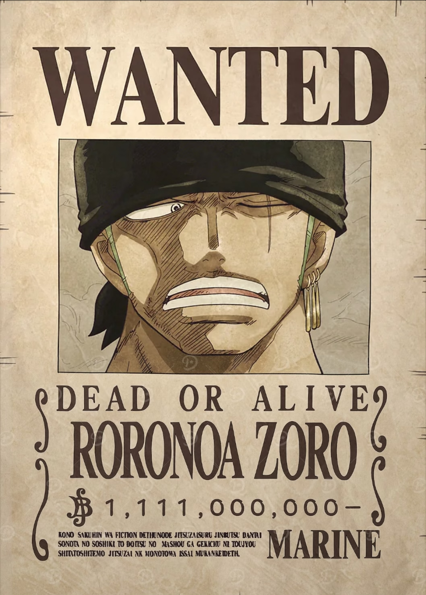
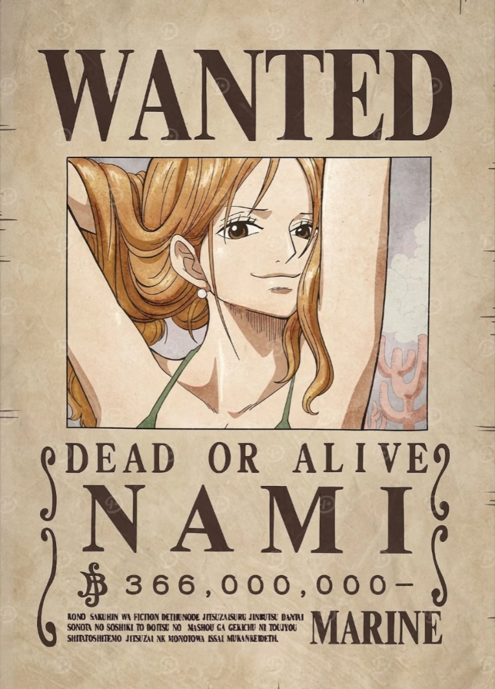
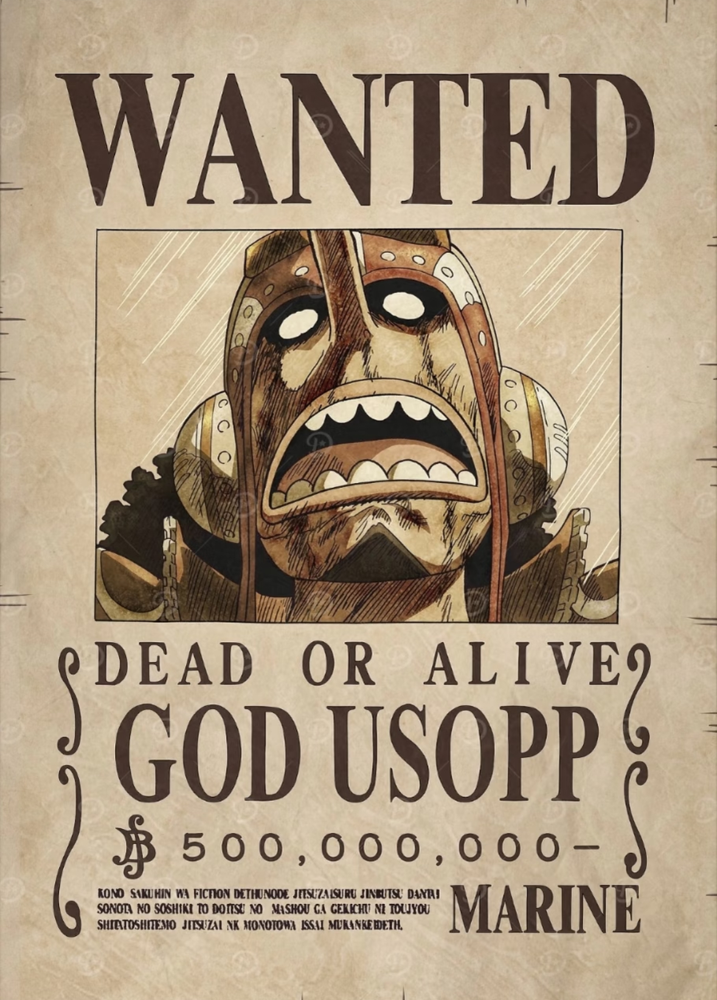
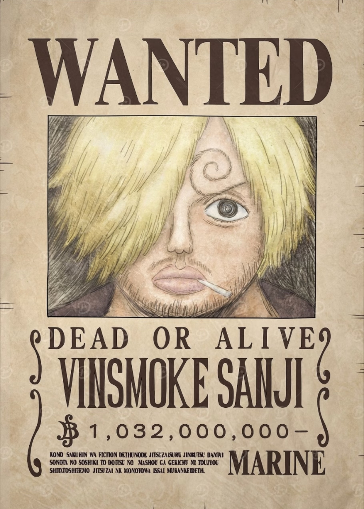
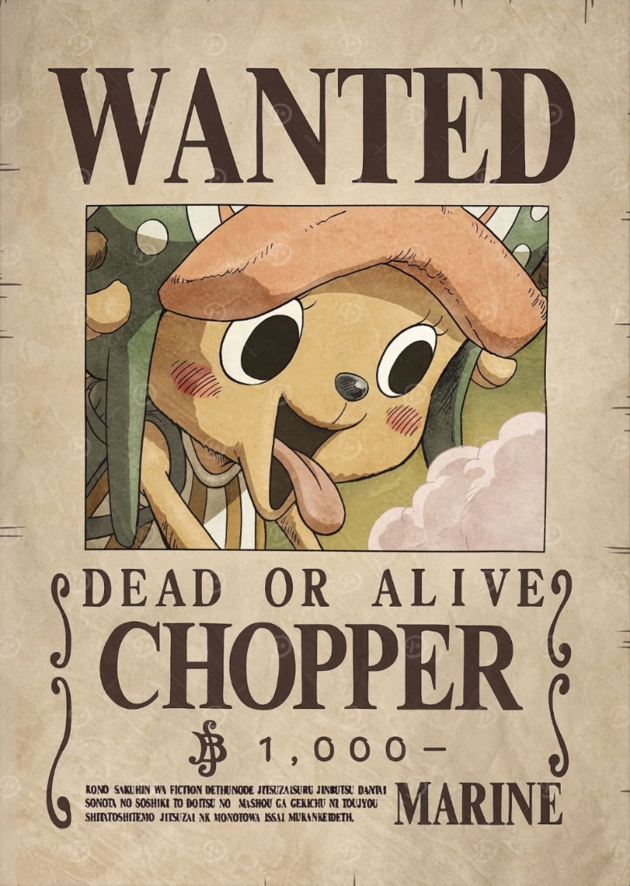
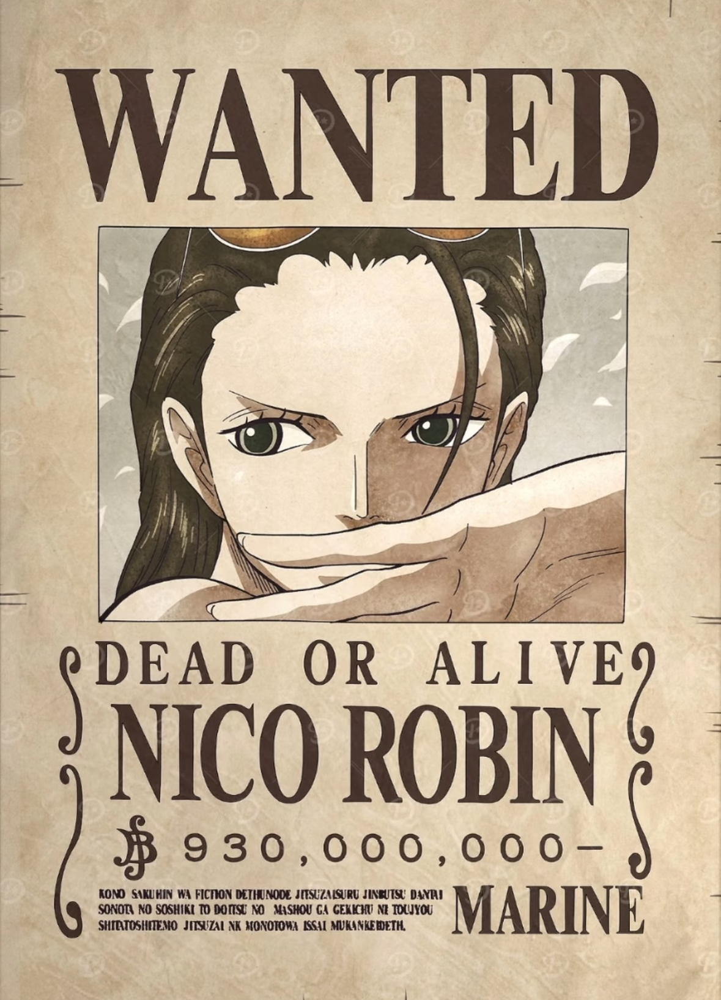
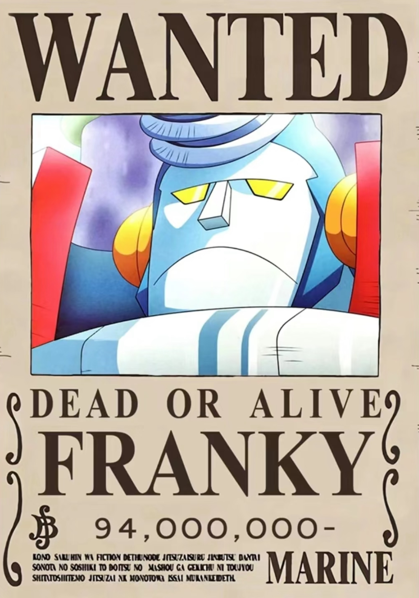
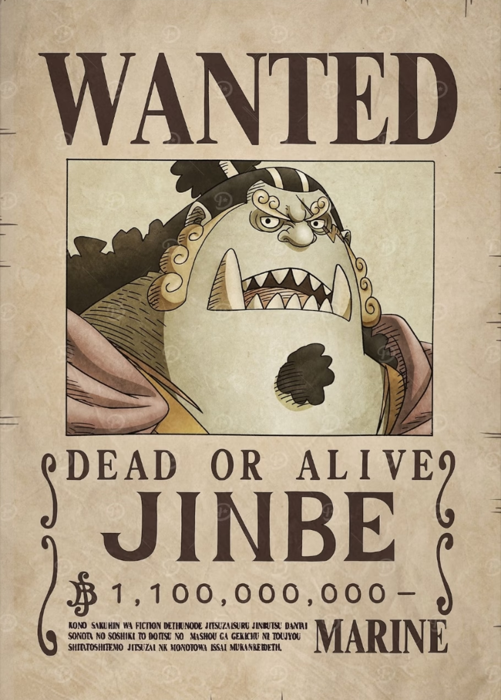

上船原因：与路飞约定，要成为世界第一大剑豪，需借由路飞的船出海历练。
对应剧情：东海篇，索隆被海军上校蒙卡之子贝鲁梅伯囚禁，路飞为招募他出手相救，索隆认可路飞的野心后加入，成为草帽团第一个伙伴。

上船原因：为攒钱赎回被阿龙海贼团霸占的故乡可可西亚村，需要路飞等人的帮助，后真心认可伙伴情谊，成为全职航海士。
对应剧情：东海篇，娜美起初以偷取海贼财宝为目标，假意加入草帽团，路飞得知她的苦衷后，带领团队击溃阿龙海贼团，娜美彻底放下心结正式入团。

上船原因：渴望成为勇敢的海上战士，守护村庄与伙伴，与路飞等人共同冒险。
对应剧情：东海篇，乌索普为保护可雅小姐的村庄，对抗黑猫海贼团，路飞出手相助，战后乌索普带着自制武器加入，成为团队狙击手。

上船原因：梦想找到四海食材汇聚的“All Blue”，认可路飞的梦想，愿意以厨师身份同行。
对应剧情：东海篇，山治在海上餐厅巴拉蒂工作，为保护餐厅对抗克里克海贼团，路飞邀请他上船，山治在哲普的准许下加入草帽团。

上船原因：被路飞的真诚打动，渴望看看外面的世界，以船医身份和伙伴们冒险。
对应剧情：伟大航路磁鼓岛篇，乔巴是被驯鹿群排挤的人人果实能力者，路飞帮助他和朵丽儿医娘击败瓦波尔，乔巴带着医药箱加入团队。

上船原因：作为唯一能解读历史正文的人，长期被世界政府追杀，路飞等人愿意接纳并保护她，她渴望找到空白的100年历史真相。
对应剧情：阿拉巴斯坦篇，罗宾初次登场，战后以临时身份加入；司法岛篇，为保护伙伴自愿被世界政府带走，路飞带领团队宣战CP9，救出罗宾，她从此真正成为草帽团一员。

上船原因：为完成恩师汤姆的遗愿，打造一艘能抵达拉夫德鲁的船，与路飞等人一起见证世界的尽头。
对应剧情：司法岛篇，弗兰奇是改造人，曾因冥王设计图与草帽团产生冲突，后并肩作战对抗CP9，战后用亚当宝树为草帽团打造了千里阳光号，以船匠身份入团。

上船原因：认可路飞的王者气概，梦想实现鱼人族与人类的和平共处，愿意以掌舵手身份辅佐路飞。
对应剧情：顶上战争后，甚平多次帮助路飞；蛋糕岛篇，为帮路飞救出山治，与大妈海贼团决裂，正式加入草帽团，成为团队掌舵手。